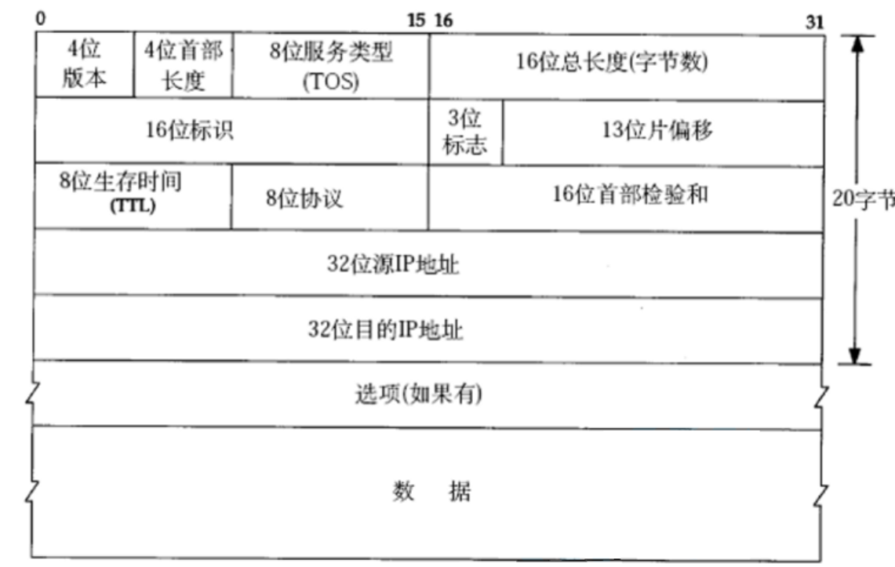
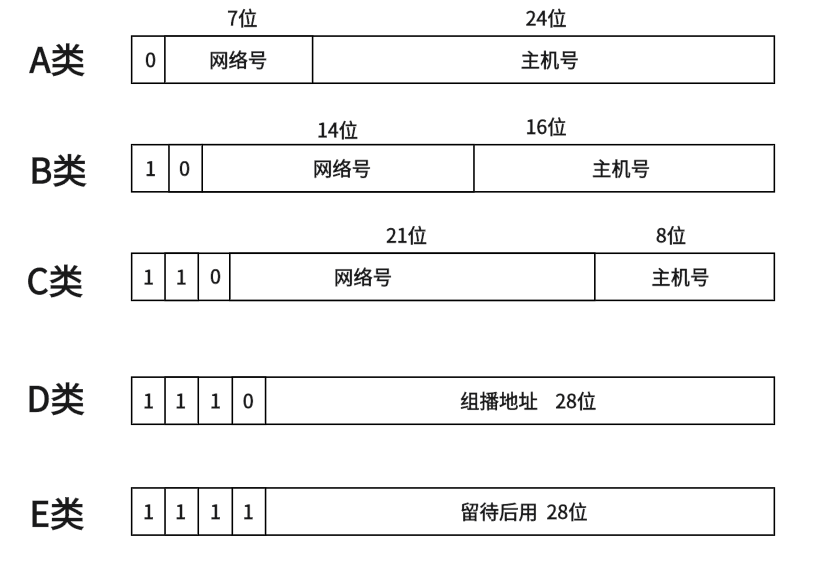
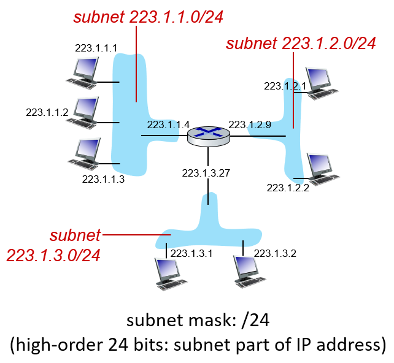
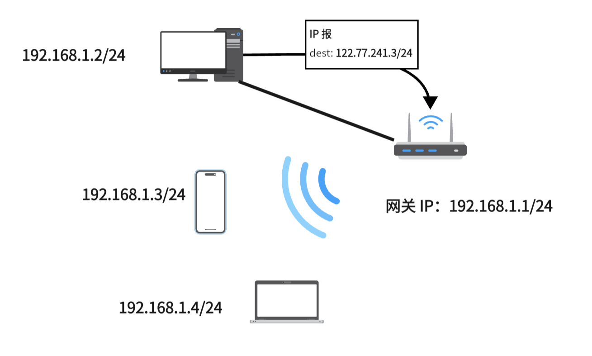
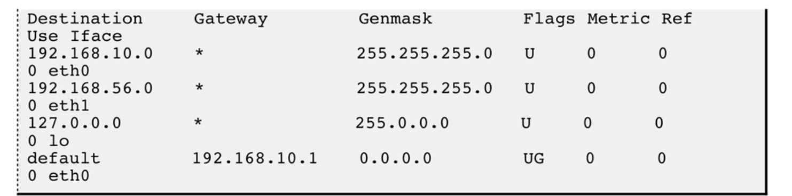
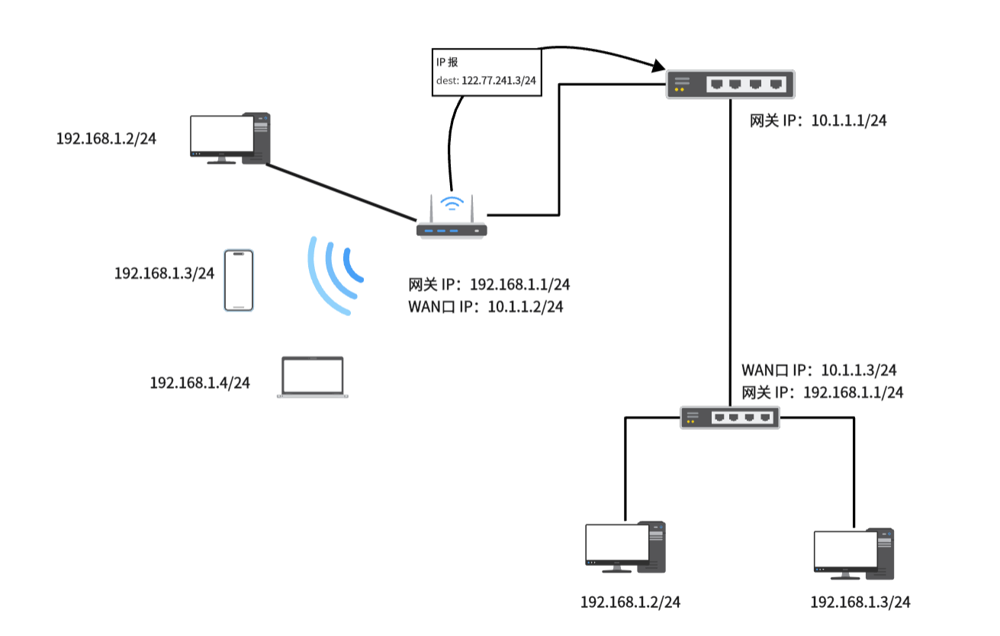
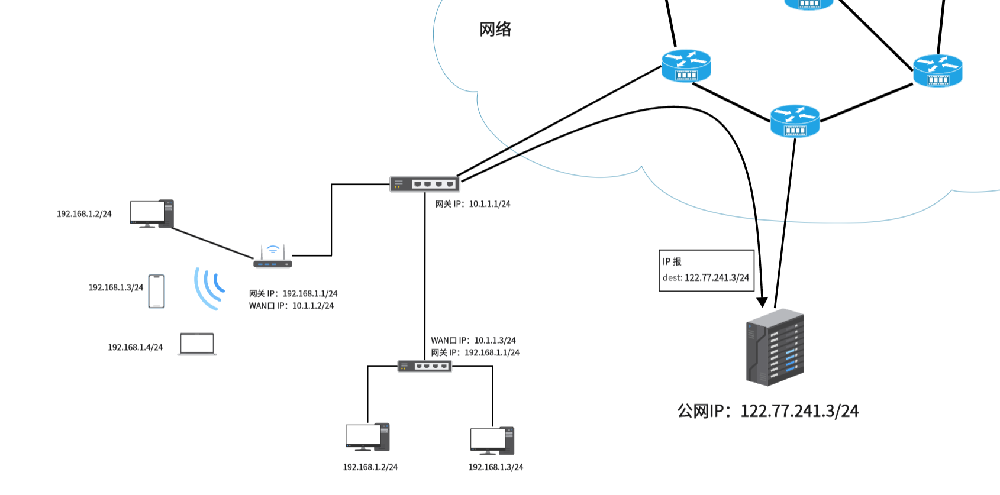

IPv4
简介
IP（Internet Protocol，互联网协议）是网络层最重要的协议之一，负责在网络中传输数据包。它定义了数据包的格式和处理方式，是TCP/IP协议栈中的核心协议。
IP 协议负责的是网际的数据传输，也就是将数据从一个网络中的主机传递到另一个网络中的主机中。
协议格式

-
版本(version): 指定IP协议的版本, 对于IPv4来说, 就是 4。
-
首部长度(header length): 标识了 IP Header 的长度，单位是 4Byte，也就是说首部长度是 \(len \times 4\)Byte。一个没有选项的首部这里的值是 \((0101)_2\)。
-
8 位服务类型(Type Of Service): 3位优先权字段(已经弃用), 4位 TOS 字段, 和 1 位保留字段(必须置为0). 4位TOS分别表示: 最小延时, 最大吞吐量, 最高可靠性, 最小成本. 这四者相互冲突, 只能选择一个. 对于 ssh/telnet 这样的应用程序, 最小延时比较重要; 对于ftp 这样的程序, 最大吞吐量比较重要。
-
16 位总长度(total length): IP数据报整体占多少个字节。
-
16 位标识(id): 唯一的标识主机发送的报文. 如果IP报文在数据链路层被分片了, 那么每一个片里面的这个 id 都是相同的。
-
3 位标志字段: 第一位保留(保留的意思是现在不用, 但是还没想好说不定以后要用到). 第二位置为1表示禁止分片, 这时候如果报文长度超过MTU, IP模块就会丢弃报文. 第三位表示"更多分片", 如果分片了的话,最后一个分片置为1, 其他是0. 类似于一个结束标记。
-
8 位生存时间(Time To Live, TTL): 数据报到达目的地的最大报文跳数. 一般是64. 每次经过一个路由, TTL -= 1, 一直减到0还没到达, 那么就丢弃了. 这个字段主要是用来防止出现路由循环。
-
8 位协议: 表示上层协议的类型。TCP 为 \((0000 0110)_2\)，UDP 为 \((0001 0001)_2\)，对于所有可能的值参见 wiki。
-
16位头部校验和: 用于检测 IP 数据报首部是否出现差错，计算方法通 TCP，UDP。
-
32位源地址和32位目标地址: 表示发送端和接收端。
-
选项：略。IPv6 中考虑到效率因素舍弃了选项字段。
IP 地址的划分
点分十进制
IP 地址是一个 32 位的二进制数，为了便于人类阅读通常采用点分十进制（dotted-decimal notation）的方式书写，即将 32 位中每 8 位划分位一个十进制数，用点隔开：
eg:\((11000001 00100000 11011000 00001001)_2 = 193.32.216.9\)
IP 地址分为两个部分, 网络号和主机号：
-
网络号: 保证相互连接的两个网段具有不同的标识。
-
主机号: 同一网段内, 主机之间具有相同的网络号, 但是必须有不同的主机号。
在建网初期，IP 地址被划分为如下几类：

这样大概计算一下：
A 类网络可以容纳的主机数量是 \(2^{24}-2=16,777,214\) 个，但数 A 类网络的数量只有 \(2^{7}=128\) 个。
B 类网络可以容纳的主机数量是 \(2^{16}-2=65534\) 个，B 类网络的数量有 \(2^{14}=16,384\) 个。
C 类网络可以容纳的主机数量是 \(2^{8}-2=254\) 个，c 类网络的数据有 \(2^{21}=2,097,152\) 个。
这里减 2 是要减去 广播地址（主机号全 1） 和 网络地址（主机号全 0）。还有比较特殊的 IP 是 127.0.0.1 ，它常用用于本机环回(loop back)测试
随着 Internet 的飞速发展,这种划分方案的局限性很快显现出来,大多数组织都申请 B 类网络地址, 导致 B 类地址很快就分配完了, 而 A 类却浪费了大量地址。因为子网中大多数情况下不会有 B 类或 A 类中那么多主机。
针对这种情况提出了新的划分方案, 称为 CIDR(Classless Interdomain Routing)，

子网掩码（network mask）也是一个 32 二位的二进制数，它由若干位前缀 1 和若干位后缀 0 组成。通常为了书写便捷，会将子网掩码中 1 的个数直接写在 IP 地址后面：a.b.c.d/x，如图中所示那样：223.1.1.1/24
当我们要只要一个 IP 地址的网络号时，只需拿子网掩码与 IP 地址做按位与（AND），结果就是网络号，以上图 subnet 223.1.1.0/24 中 223.1.1.1 主机为例，它的网络号计算方式如下：
最后算出的网络号写成点分十进制就是：223.1.1.0。
有了子网掩码，可以更灵活的划分网络和主机号，适用于各种场合，在一定程度上缓解了 IPv4 地址不足的问题（因为提高了地址利用率）。
内网 IP与公网 IP
我们通常使用的 IP 地址都是内网 IP，只能唯一标识子网中的主机，也就是说只能用于一个子网内的通信，想要跨网通信只能使用公网 IP。
如果一个组织内部组建局域网，IP地址只用于局域网内的通信，而不直接连到公网上，理论上使用任意的IP地址都可以,但是 RFC 1918 规定了用于组建局域网的私有IP地址：
-
0.* ,前8位是网络号,共 16,777,216 个地址
-
172.16. 到 172.31.,前12位是网络号,共 1,048,576 个地址
-
192.168.*,前16位是网络号,共 65,536 个地址
包含在这个范围中的, 都成为私有IP, 其余的则称为全局IP(或公网IP)。
我们从一个子网开始，逐步理解公网和内网。
网关
当你在家中安装了一个路由器时，事实上就完成了一个子网的构建。对于每一个接入网络的设备，它们会通过 DHCP 协议自动获取一个内网 IP。这样在这个局域网中的设备之间就可以正常通信了。
现在假设家中局域网中的主机 192.168.1.2/24 要向一个公网 IP：122.77.241.3/24 发送数据，会发现目标 IP 并不是本子网中的主机。
想要和其他网络中的主机进行通信，就必须指定本网络中的一个路由器，让该路由器帮忙做转发，被指定的路由器在子网中的 IP 地址就被成为默认网关（Default gateway）。

当主机发现目标主机不在子网中时，会把消息发给默认网关，也就是 192.168.1.1/24，让其帮忙转发到其他网络中去寻找该 IP。
路由器
一份数据在到达终点前会经过许多路由器，而路由器作用是确定数据的下一条路径是到哪一个路由器的，也就是路由。
这里在理解路由器时，不要把它想象的太过神秘，其实就可以把它看作是一台电脑，和我们的个人电脑类似，只不过它有着更多的网络接口，用来将不同的数据转发到下一跳路由器。我们的个人电脑其实也有路由功能，在最开始发出数据时用于判断该数据是发给当前子网中设备的，还是给其他网络中设备的。
实现路由功能依赖于路由器内部的一张路由表。我们可以使用 route 命令 ，查看我们主机的路由表，如下图就是一张路由表：

路由表的 Destination 是目的网络地址,Genmask 是子网掩码,Gateway 是网关 IP，Iface 是对应网络的发送接口。
当路由器拿到一个目的 IP 时，在路由表中逐条对比网络号，当找到有相对网络号时，就将数据转发到该发送口，如果没有比配的网络号，说明该 IP 不处于当前子网中，就将数据转发给网关，也就是下一跳路由器。
在上面的例子中，子网中并不存在对应的网络号，所以路由器将数据转发给该子网的网关 10.1.1.1/24，并将源 IP 改为当前路由器的 IP。

最后在网络中经过多次这样的路由转发，数据就会到达对应的服务器：

这就是路由器转发数据的过程。当服务器想给我们回复一份数据时，我们发现他只能通过 IP 报文中的源 IP 字段将信息发回给直连的路由器。